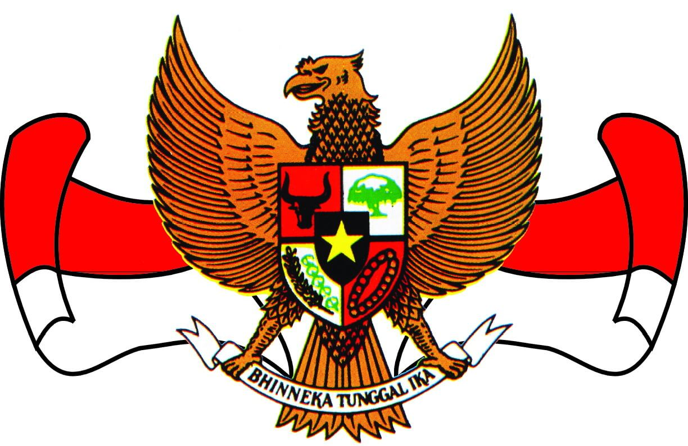
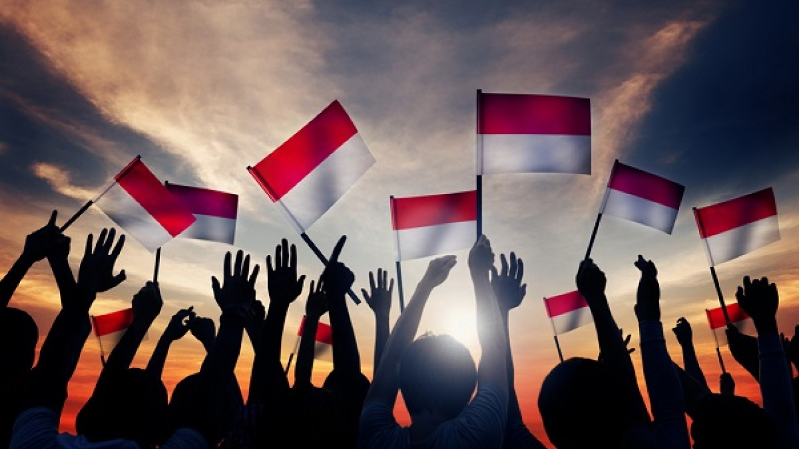
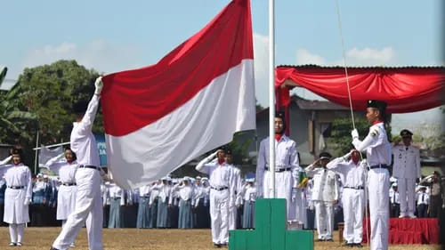
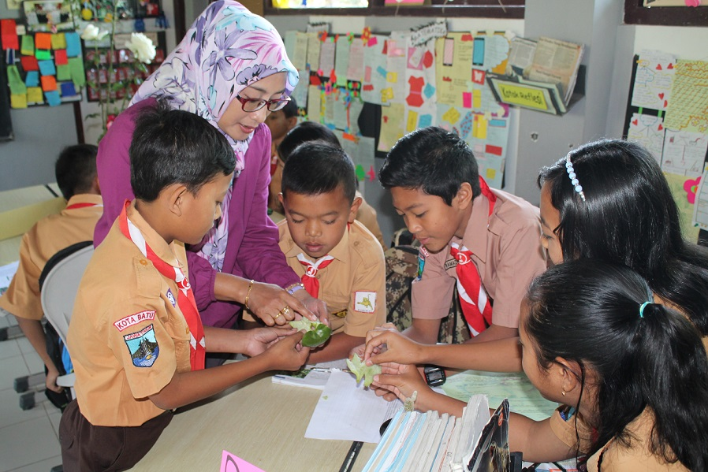

PPKN

- Pengertian PPKn

PPKN merupakan singkatan dari "Pendidikan Pancasila dan Kewarganegaraan." Ini adalah mata pelajaran yang diajarkan di sekolah-sekolah di Indonesia. PPKn berfokus pada pengajaran nilai-nilai Pancasila sebagai dasar ideologi negara Indonesia, serta tentang kewarganegaraan, hak dan kewajiban warga negara, konstitusi, dan aspek-aspek penting lainnya yang terkait dengan kepribadian dan kehidupan berbangsa dan bernegara.
Mata pelajaran PPKN dirancang untuk membantu mengembangkan pemahaman siswa tentang identitas nasional, etika, moral, dan tanggung jawab sebagai warga negara Indonesia. Melalui pembelajaran PPKN, siswa diharapkan dapat menginternalisasi nilai-nilai Pancasila dan memahami bagaimana nilai-nilai tersebut tercermin dalam kehidupan sehari-hari serta dalam kerangka sistem pemerintahan dan masyarakat Indonesia.
- Tujuan PPKn

Tujuan utama dari Pendidikan Pancasila dan Kewarganegaraan (PPKN) adalah untuk membentuk dan mengembangkan sikap serta pemahaman positif terhadap nilai-nilai Pancasila, serta untuk mempersiapkan siswa sebagai warga negara yang bertanggung jawab, aktif, dan peduli terhadap negara dan masyarakat. Beberapa tujuan khusus dari mata pelajaran PPKN antara lain:
- Menginternalisasi Nilai-nilai Pancasila: PPKN bertujuan untuk mengajarkan siswa mengenai nilai-nilai dasar Pancasila, yaitu Ketuhanan Yang Maha Esa, Kemanusiaan yang Adil dan Beradab, Persatuan Indonesia, Kerakyatan yang Dipimpin oleh Hikmat Kebijaksanaan dalam Permusyawaratan/Perwakilan, dan Keadilan Sosial bagi Seluruh Rakyat Indonesia. Tujuan ini adalah untuk membentuk karakter siswa yang mencerminkan nilai-nilai tersebut.
- Mengembangkan Kepedulian dan Identitas Kewarganegaraan: PPKN bertujuan untuk membantu siswa memahami arti menjadi warga negara yang aktif dan bertanggung jawab. Ini termasuk memahami hak-hak dan kewajiban sebagai warga negara, serta bagaimana berkontribusi dalam pembangunan dan kesejahteraan masyarakat dan negara.
- Mengajarkan Konsep Demokrasi dan Pemerintahan: Mata pelajaran ini juga berusaha untuk mengajarkan siswa tentang prinsip-prinsip demokrasi, hak asasi manusia, serta sistem pemerintahan dan lembaga-lembaga negara di Indonesia. Ini bertujuan untuk mempersiapkan siswa sebagai bagian dari masyarakat yang berpartisipasi dalam proses demokrasi.
- Membentuk Sikap Toleransi dan Menghargai Keberagaman: PPKN juga bertujuan untuk membentuk sikap toleransi, menghargai keberagaman budaya, agama, dan suku dalam masyarakat Indonesia. Ini penting untuk membangun kerukunan dan persatuan di tengah masyarakat yang multikultural.
- Mendorong Kesadaran Lingkungan: Beberapa kurikulum PPKN juga mencakup isu-isu lingkungan dan keberlanjutan, bertujuan untuk membentuk siswa yang peduli terhadap lingkungan dan memiliki kesadaran akan dampak kegiatan manusia terhadap alam.
Secara keseluruhan, tujuan PPKN adalah membentuk generasi muda yang memiliki pemahaman yang mendalam tentang nilai-nilai nasional, memiliki keterampilan dalam berpartisipasi dalam kehidupan demokratis, dan dapat berkontribusi secara positif terhadap kemajuan masyarakat dan negara.
- Landasan PPKn

Pendidikan kewarganegaraan mengandung beberapa landasan yaitu:
- Landasan filosofi
Mempelajari Pendidikan Kewarganegaraan merupakan perwujudan tujuan nasional yaitu mencerdaskan kehidupan bangsa. Dalam hal ini Indonesia memiliki Pancasila sebagai ideologi nasional yang merupakan kekuatan pemersatu dan pembangunan karakter bangsa yang salah satunya ialah semangat kebangsaan atau semangat persatuan yang multikultural dalam Bhineka Tunggal Ika. Pendidikan Kewarganegaraan sangat penting dalam membangun semangat kebangsaan dengan menumbuhkan nilai-nilai demokrasi kemanusiaan, keadilan sosial, cinta tanah air, memiliki kesadaran hukum dan kemampuan bela negara. - Landasan historis
Suatu bangsa ataupun negara mempunyai perjalanan panjang untuk eksistensi negara dan warganya. Seperti contohnya Indonesia untuk mencapai kemerdekaan, bangsa Indonesia telah mengalami berbagai tantangan yang tak mudah dalam rentang waktu yang lama sehingga untuk menanamkan rasa nasionalisme perlu diadakannya Pendidikan Kewarganegaraan. Hal ini bertujuan untuk menghargai sejarah proklamasi serta mewujudkan cita-cita nasional dan tujuan nasional. - Landasan sosiologis
Indonesia merupakan negara yang besar dengan budaya yang beragam dan multikultur berdasarkan etnis dan bahasa. Perbedaan ini merupakan potensi kekuatan bangsa. Keberagaman diikat oleh norma dan aturan untuk menjaga Harmoni kehidupan guna mewujudkan kesadaran moral dan hukum. Dengan mempelajari pendidikan kewarganegaraan akan memperkuat jati diri bangsa serta komitmen untuk mewujudkan cinta tanah air, kesadaran bela negara, da persatuan nasional dalam suasana saling menghargai keberagaman. Generasi penerus bisa menghargai persatuan keberagaman budaya adat istiadat tradisi melalui pembelajaran pendidikan kewarganegaraan. - Landasan yuridis
Pengadaan pendidikan kewarganegaraan tertuang dalam aturan tertulis seperti undang-undang nomor 2 tahun 1989 tentang Sistem Pendidikan Nasional atau SISDIKNAS menyatakan bahwa Pendidikan kewiraan termasuk Pendidikan Kewarganegaraan merupakan kurikulum wajib pada setiap jenjang dan jenis pendidikan.
Pendidikan Kewarganegaraan bertujuan membentuk peserta didik menjadi manusia yang memiliki rasa kebangsaan dan cinta tanah air rasa ini diwujudkan dalam bentuk bela negara seperti yang tercantum dalam UUD 1945 hasil amandemen yaitu pasal 27 ayat 3 yang berbunyi "Setiap warga negara berhak wajib dan ikut serta dalam upaya pembelaan negara" dan ditegaskan kembali pada pasal 30 ayat 1 bahwa "Tiap-tiap warga negara berhak dan wajib ikut serta dalam usaha pertahanan keamanan negara". - Landasan teoritis
Mempelajari pendidikan kewarganegaraan juga selaras dengan hasil konferensi sembilan menteri pendidikan dari negara berpenduduk terbesar di dunia termasuk Indonesia di New Delhi, India tahun 1996 yang menyepakati bahwa pendidikan adalah mempersiapkan pribadi sebagai warga negara dan anggota masyarakat yang bertanggungjawab, menanamkan dasar pembangunan berkelanjutan bagi kesejahteraan manusia dan pelestarian lingkungan hidup serta menyelenggarakan pendidikan yang berorientasi pada penguasaan pengembangan dan penyebaran IPTEK dan seni demi kepentingan kemanusiaan.
Pendidikan Kewarganegaraan bersifat universal dan menyeluruh yang tidak hanya dipelajari di Indonesia namun juga di negara lain di dunia tidak hanya dalam konteks school civics tapi juga community civics Yang intinya kaitan antara warganegara individu dan pemerintah hak dan kewajiban sebagai warga negara dari sebuah negara hukum demokrasi dan partisipasi persiapan warga negara sebagai bagian dari warga dunia.
|